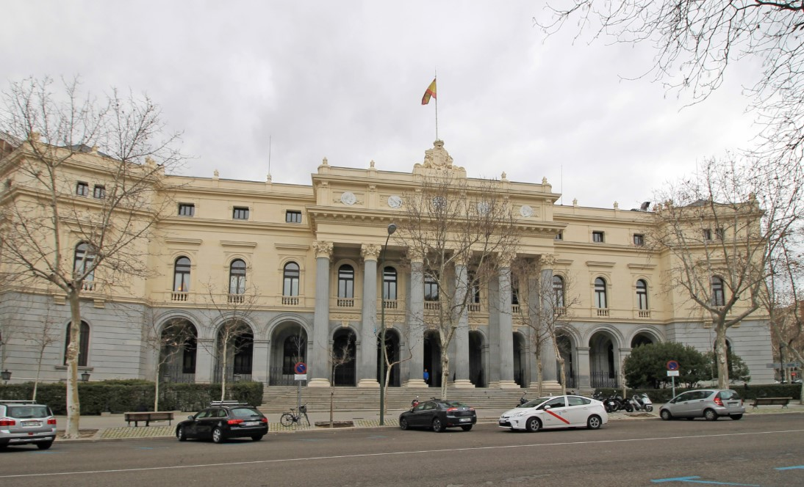

Los mercados y las bolsas internacionales.
El Mercado Bursátil Español
- 4 Bolsas: Madrid, Barcelona, Bilbao, Valencia
- Sociedad de Bolsas y mercado continuo
- Historia de la Bolsa de Madrid (1831)
Objetivo
Comprenderás que detrás del número del IBEX-35 hay una infraestructura real y con historia: , una evolución de casi dos siglos y una integración progresiva en los mercados financieros europeos e internacionales.
Explicación
Cuando decimos que el IBEX-35 "sube" o "baja", hay una pregunta que pocas personas se hacen: ¿dónde ocurre eso físicamente? ¿Dónde se negocian esas acciones? La respuesta nos lleva a conocer la arquitectura del mercado bursátil español.
España tiene, técnicamente, cuatro bolsas de valores: Madrid, Barcelona, Bilbao y Valencia. Cada una con su historia, su tradición y su vínculo con la economía de su región. Pero desde 2002, las cuatro operan de forma integrada a través del mercado continuo, una plataforma electrónica gestionada por la Sociedad de Bolsas que permite que una orden de compra en Bilbao se cruce con una oferta de venta en Valencia en fracciones de segundo.
La más antigua e importante es, sin duda, la Bolsa de Madrid. Corría el año 1831. España estaba en una situación financiera muy delicada, bajo el reinado de Fernando VII. Necesitaba un mercado regulado para negociar deuda pública de forma ordenada. Así nació, por Real Decreto, la Bolsa de Madrid. No fue un capricho: fue una necesidad de Estado para financiarse con credibilidad ante los acreedores.
Seis décadas después, en 1893, la Reina Regente María Cristina inauguró el edificio que todos conocemos: el , en la Plaza de la Lealtad de Madrid. Arquitectura diseñada para transmitir una sola cosa: solidez y confianza.

El siglo XX fue de transformación: la Bolsa fue incorporando empresas privadas, y en 1988 llegó un hito regulatorio fundamental: la creación de la . Un año después, en 1989, nació el IBEX-35.
Y llegamos al siglo XXI con dos movimientos clave: primero, en 2002, la integración de las cuatro bolsas bajo BME — Bolsas y Mercados Españoles. Segundo —y muy relevante— en 2020, el grupo suizo adquirió BME por más de 2.500 millones de euros. La bolsa española ya no es solo española: es parte de un operador financiero europeo de primer nivel.
Analogía
Imaginen cuatro aeropuertos regionales —Madrid, Barcelona, Bilbao, Valencia— que un día deciden crear un sistema de control de tráfico aéreo único y compartido. Los aviones siguen despegando y aterrizando en sus ciudades, pero el sistema que coordina todos los vuelos es uno solo, más eficiente y con una visión global del espacio aéreo.
Eso es exactamente el mercado continuo: las cuatro bolsas mantienen su identidad histórica, pero todas las órdenes de compra y venta fluyen por una única plataforma electrónica que las integra. Y ahora, con la adquisición de SIX Group, ese aeropuerto español también está conectado al sistema de vuelos internacional.
Contexto financiero real
La historia de la Bolsa de Madrid no es solo historia cultural: está llena de lecciones financieras vigentes.
La creación en 1831 para gestionar deuda pública nos recuerda que los mercados de capitales nacen de la necesidad de los Estados de financiarse. La prima de riesgo española —la diferencia entre el interés que paga España por su deuda y el que paga Alemania— es en esencia la misma pregunta que se hacían los inversores en 1831: ¿cuánto me fío de este país para prestarle dinero?
La creación de la en 1988 fue la respuesta regulatoria a escándalos y falta de transparencia que habían dañado la confianza en los mercados. Esto ocurrió en toda Europa en esos años —el Big Bang de la City de Londres fue en 1986— y marcó el inicio de la era de los mercados modernos, regulados y supervisados.
Complemento actualizado
(Datos recientes — fuentes: Wikipedia BME / SIX Group, Investing.com / EFE — mayo 2026)
Desde el 11 de junio de 2020, BME pertenece al grupo suizo SIX Group. La combinación de ambas entidades conforma el tercer mayor operador de infraestructuras de mercados financieros por ingresos en Europa y el décimo a nivel mundial.
En cuanto a los ingresos, BME facturó 311,9 millones de euros en 2024 y emplea a más de 1.000 personas.
El debate más actual: la transición al ciclo (liquidación al día hábil siguiente). EE.UU. ya lo adoptó en 2024; Europa está en proceso de implementarlo. SIX Group señala que esta reducción del ciclo de liquidación está ejerciendo una gran presión operativa sobre todos los participantes del ecosistema financiero europeo.
⚠ Los datos sobre BME/SIX Group y T+1 son información actualizada de fuentes externas.
Preguntas difíciles y respuestas
«Si BME ya es de un grupo suizo, ¿España ha perdido el control de su propio mercado bursátil?»
Es una pregunta con mucha carga simbólica, y es legítima. La respuesta honesta es que BME sigue operando bajo regulación española y europea, supervisada por la y la ESMA. La propiedad del operador es privada e internacional, igual que ocurre con muchas infraestructuras financieras en Europa —la Bolsa de Londres también cotiza en bolsa, y Euronext agrupa bolsas de varios países. Lo que cambia es quién cobra los beneficios de la gestión del mercado. El regulador sigue siendo soberano; el gestor, no necesariamente.
«¿Por qué tiene sentido mantener cuatro bolsas regionales si todo se opera electrónicamente desde una sola plataforma?»
Desde el punto de vista puramente operativo, probablemente no sería necesario. Pero las bolsas de Bilbao, Barcelona y Valencia tienen valor institucional, histórico y simbólico para sus regiones. También cumplen funciones de difusión financiera local, formación y acceso para empresas más pequeñas. Además, en un contexto político español sensible a los equilibrios territoriales, mantener esa presencia regional tiene un significado que va más allá de lo puramente financiero.
Autoevaluación
¿Cuántas bolsas de valores tiene España y cuál es la principal?
España tiene cuatro bolsas físicas: Madrid (fundada en 1831, la más importante), Barcelona, Bilbao y Valencia. Todas están interconectadas a través del Sistema de Interconexión Bursátil Español (SIBE), que permite operar en las cuatro simultáneamente desde cualquier terminal. Es lo que se llama el mercado continuo.
La respuesta correcta es: Cuatro bolsas: Madrid, Barcelona, Bilbao y Valencia. La de Madrid es la más importante y la más antigua (1831). Las cuatro están unificadas tecnológicamente en el mercado continuo español.
Transición
Hemos repasado la historia y la arquitectura del mercado español. Ahora bien: sabemos qué es una bolsa, sabemos qué mide el IBEX-35... pero ¿qué hace que los precios suban o bajen? Vamos a analizar una operación concreta que ilustra perfectamente la psicología del mercado: los splits y contra-splits.